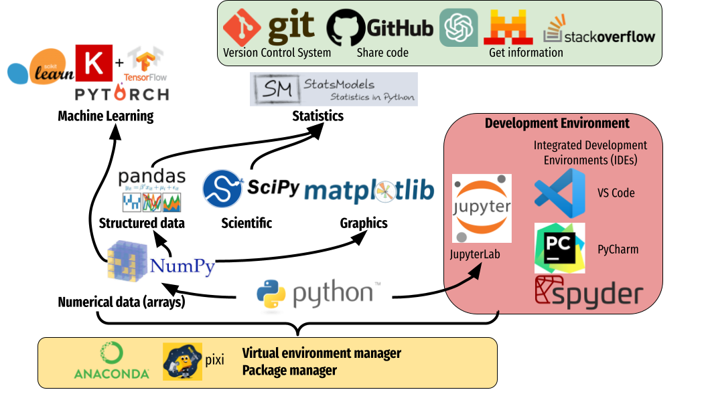

Introduction to Python language¶
Python main features¶
Python is popular Google trends (Python vs. R, Matlab, SPSS, Stata).
Python is interpreted: source files
.pyare translated into an intermediate representaion whic is executed by the interpreter which is executed by the processor. Conversely, to interpreted languages, compiled languages, such as C or C++, rely on two steps: (i) source files are compiled into a binary program. (ii) binaries are executed by the CPU. directly.Python integrates an automatic memory management mechanism: the Garbage Collector (GC). (do not prevent from memory leak).
Python is a dynamically-typed language (Java is statically typed).
Efficient data manipulation is obtained using libraries (Numpy, Scipy, Pytroch) executed in compiled code.
{kind=link}
Development process¶
Edit python file then execute
Write python file,
file.pyusing any text editor:a = 1 b = 2 print("Hello world")
Run with python interpreter. On the dos/unix command line execute wholes file:
python file.py
Interactive mode
pythoninterpreter:python
Quite with CTL-D
ipython: advanced interactive python interpreter:ipython
Quite with CTL-D
Overview of Python ecosystem for data-science¶
{kind=link}
Numpy: Basic numerical operation and matrix operation
import numpy as np
X = np.array([[1, 2], [3, 4]])
v = np.array([1, 2])
np.dot(X, v)
X - X.mean(axis=0)
Scipy: General scientific libraries with advanced matrix operation and solver
import scipy
import scipy.linalg
scipy.linalg.svd(X, full_matrices=False)
Pandas: Manipulation of structured data (tables). Input/output excel files, etc.
import pandas as pd
data = pandas.read_excel("datasets/iris.xls")
print(data.head())
Out[8]:
sepal_length sepal_width petal_length petal_width species
0 5.1 3.5 1.4 0.2 setosa
1 4.9 3.0 1.4 0.2 setosa
2 4.7 3.2 1.3 0.2 setosa
3 4.6 3.1 1.5 0.2 setosa
4 5.0 3.6 1.4 0.2 setosa
Matplotlib: visualization (low level primitives)
import numpy as np
import matplotlib.pyplot as plt
#%matplotlib qt
x = np.linspace(0, 10, 50)
sinus = np.sin(x)
plt.plot(x, sinus)
plt.show()
Seaborn: Data visualization (high level primitives for statistics)
See Example gallery
Statsmodel Advanced statistics (linear models, time series, etc.)
Scikit-learn Machine learning: non-deep learning models and toolbox to be combined with other learning models (Pytorch, etc.).
Pytorch for deep learning.
Development Environment¶
A typical Python development environment consists of several key components, which work together to facilitate coding, testing, and debugging. Here are the main components:
Python Interpreter. The core of any Python development environment is the Python interpreter (e.g., Python 3.x). It runs Python code and converts it into machine-readable form. You can download it from python.org.
Text Editor or Integrated Development Environment (IDE) or jupyter-notebook.
Text Editors: Lightweight editors like Sublime Text, Atom, or VS Code offer basic text editing with syntax highlighting and extensions for Python development.
IDEs: Full-featured IDEs like PyCharm, VS Code (with Python extensions), or Spyder offer advanced features like code completion, debugging, project management, version control, and testing integrations.
Package Manager & Dependency Management
pip: The default Python package manager, which allows you to install, upgrade, and manage external libraries and dependencies.
Conda: An alternative package and environment manager, often used in data science for managing dependencies and virtual environments.
Pixi is a fast software package manager built on top of the existing conda ecosystem.
Conda & Pixi: provide the Python Interpreter.
Virtual Environment Manager
Virtual environments allow you to create isolated environments for different projects, preventing conflicts between different project dependencies. Tools include:
venv (python module): Built-in module to create virtual environments.
virtualenv: Another popular tool for creating isolated environments.
Conda & Pixi: Manages both packages and environments.
Version Control System
Git: Essential for source control, collaboration, and version management. Platforms like GitHub, GitLab, and Bitbucket integrate Git for remote repository management. IDEs often have built-in Git support or plugins that make using Git seamless.
Debugger
Python has a built-in debugger called pdb.
Most IDEs, like PyCharm or VS Code, offer graphical debugging tools with features like breakpoints, variable inspection, and step-through execution.
Testing Framework
Tools like unittest (built-in), pytest, or nose2 help automate testing and ensure code quality.
IDEs often integrate testing frameworks to run and debug tests efficiently.
Documentation Tools
Tools like Sphinx or pdoc help generate documentation from your code, making it easier for other developers (and your future self) to understand.
Containers (Optional)
Docker: Used to create isolated, reproducible development environments and ensure consistency between development and production environments.
Package & Environments Dependency Management¶
Pixi Package and Environment Manager¶
Pixi is a modern package management tool designed to enhance the experience of managing Python environments particularly for data science and machine learning workflows. It aims to improve upon the existing tools like Conda by offering faster and more efficient package management:
Linux & macOS
curl -fsSL https://pixi.sh/install.sh | bash
Windows
iwr -useb https://pixi.sh/install.ps1 | iex
Creating an Environment, then add python, and packages
pixi init myenv
cd myenv
pixi add python=3.8
pixi add scikit-learn pandas statsmodels seaborn
pixi add spyder spyder-kernels
Example with pystatsml, After downloading pystatsml repository:
git clone https://github.com/duchesnay/pystatsml.git
cd pystatsml
Install dependencies contained in pixi.toml file (within the project directory)
pixi install
Activate an environment (within the project directory)
pixi shell
What’s in the environment?
pixi list
Deactivating an environment
exit
Install/uninstall a package
pixi add numpy
pixi remove numpy
Anaconda and Conda environments¶
Anaconda is a python distribution that ships most of python tools and libraries.
Installation
Install it, on Linux
bash Anaconda3-2.4.1-Linux-x86_64.sh
Add anaconda path in your PATH variable (For Linux in your
.bashrcfile), example:
export PATH="${HOME}/anaconda3/bin:$PATH"
Conda environments
A Conda environments contains a specific collection of conda packages that you have installed.
Control packages environment for a specific purpose: collaborating with someone else, delivering an application to your client,
Switch between environments
Creating an environment. Example, environment_student.yml:
name: pystatsml
channels:
- conda-forge
dependencies:
- ipython
- scipy
- numpy
- pandas>=2.0.3
- jupyter
- matplotlib
- scikit-learn>=1.3.0
- seaborn
- statsmodels>=0.14.0
- torchvision
- skorch
Create the environment (go have a coffee):
conda env create -f pystatsml.yml
List of all environments. Activate/deactivate an environment:
conda env list
conda activate pystatsml
conda deactivate
Updating an environment (additional or better package, remove packages). Update the contents of your environment.yml file accordingly and then run the following command:
conda env update --file pystatsml.yml --prune
List all packages or search for a specific package in the current environment:
conda list
conda list numpy
Search for available versions of package in an environment:
conda search -f numpy
Install new package in an environment:
conda install numpy
Delete an environment:
conda remove -n pystatsml --all
Miniconda
Anaconda without the collection of (>700) packages.
With Miniconda you download only the packages you want with the conda command: conda install PACKAGENAME
Download Miniconda
Install it, on Linux:
bash Miniconda3-latest-Linux-x86_64.sh
Add anaconda path in your PATH variable in your
.bashrcfile:
export PATH=${HOME}/miniconda3/bin:$PATH
Install required packages:
conda install -y scipy
conda install -y pandas
conda install -y matplotlib
conda install -y statsmodels
conda install -y scikit-learn
conda install -y spyder
conda install -y jupyter
Pip¶
pip alternative for packages management (update -U in user directory --user):
pip install -U --user seaborn
Example:
pip install -U --user nibabel
pip install -U --user nilearn
Development with Integrated Development Environment (IDE) and JupyterLab¶
Integrated Development Environment (IDE) are software development environment that provide:
Source-code editor (auto-completion, etc.).
Execution facilities (interactive, etc.).
Debugger.
Visual Studio Code (VS Code)¶
Setup
Tuto for Linux.pen the Command Palette (Ctrl+Shift+P)
Useful settings for python: VS Code for python
Extensions for data-science in python:
Python, Jupyter, Python Extension Pack, Python Pylance, Path Intellisense
Set Python environment: Open the Command Palette (Ctrl+Shift+P) search >Python: Select interpreter.
Execution, three possibilities:
Run Python file
Interactive execution in python interpreter, type:
Shift/EnterInteractive execution in Jupyter:
Install Jupyter Extension (cube icon / type
jupyter/ Install).Optional,
Shift/Enterwill send selected text to interactive Jupyter notebook: in settings (gear wheel orCTL,: press control and comma keys), check box:Jupyter > Interactive Window Text Editor > Execute Selection
Setup ssh to hostname
Select Remote-SSH: Connect to Host… from the Command Palette (
F1, Ctrl+Shift+P) and use the same user@hostname as in step 1Remember hosts: (
F1, Ctrl+Shift+P): Remote-SSH: Add New SSH Host or clicking on the Add New icon in the SSH Remote Explorer in the Activity Bar
Spyder¶
Spyder is a basic IDE dedicated to data-science.
Syntax highlighting.
Code introspection for code completion (use
TAB).Support for multiple Python consoles (including IPython).
Explore and edit variables from a GUI.
Debugging.
Navigate in code (go to function definition)
CTL.
Shortcuts:
- F9 run line/selection
JupyterLab (Jupyter Notebook)¶
JupyterLab allows data scientists to create and share document, ie, Jupyter Notebook. A Notebook is that is a document .ipynb including:
Python code, text, figures (plots), equations, and other multimedia resources.
The Notebook allows interactive execution of blocs of codes or text.
Notebook is edited using a Web browsers and it is executed by (possibly remote) IPython kernel.
jupyter notebook
New/kernel
Advantages:
Rapid and one shot data analysis
Share all-in-one data analysis documents: inluding code, text and figures
Drawbacks (source):
Difficult to maintain and keep in sync when collaboratively working on code.
Difficult to operationalize your code when using Jupyter notebooks as they don’t feature any built-in integration or tools for operationalizing your machine learning models.
Difficult to scale: Jupyter notebooks are designed for single-node data science. If your data is too big to fit in your computer’s memory, using Jupyter notebooks becomes significantly more difficult.